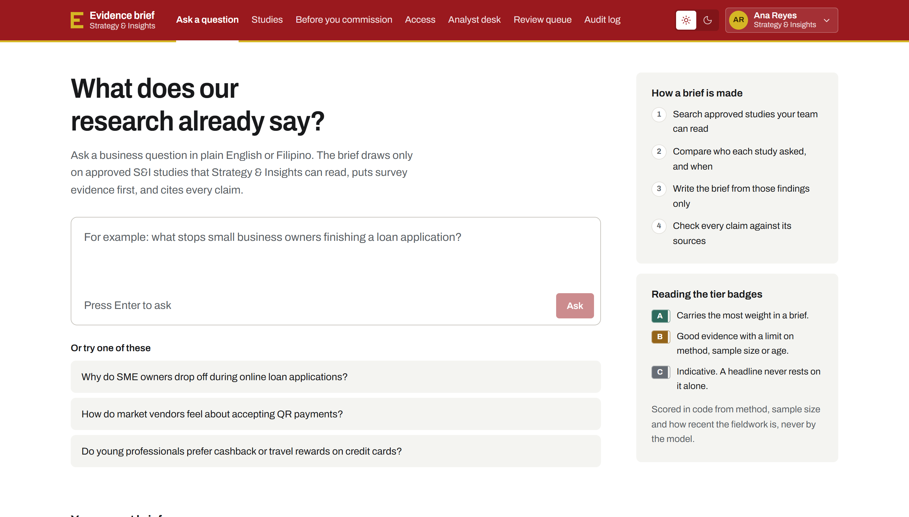
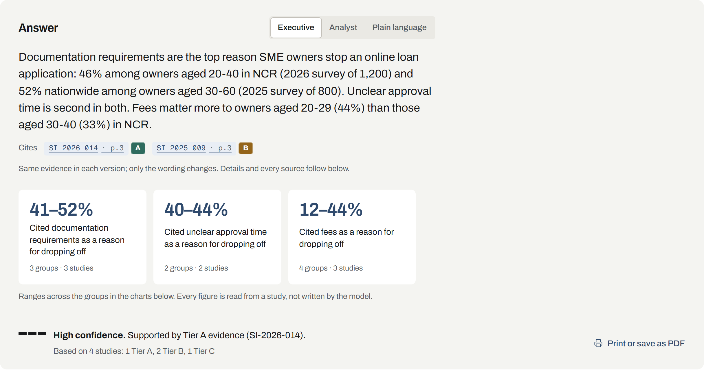
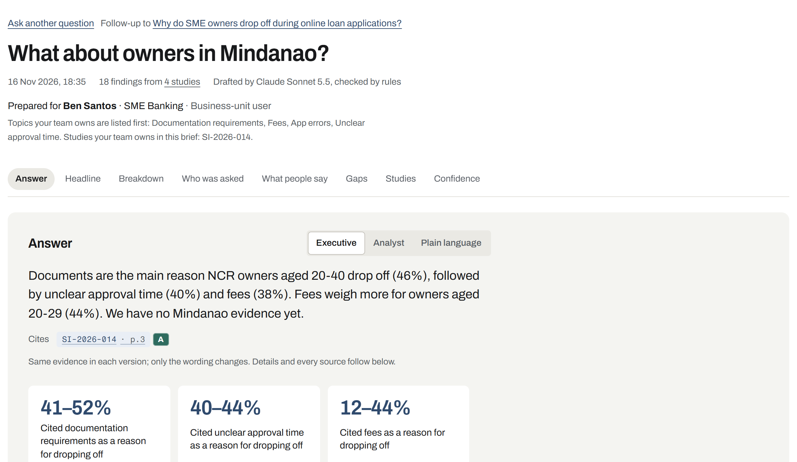
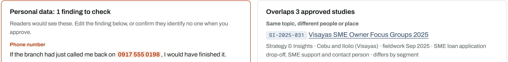
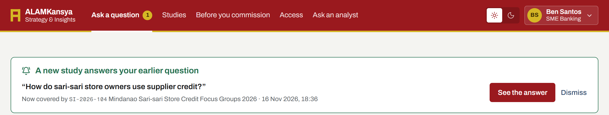
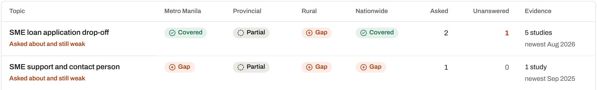

Ang alkansya ng kaalaman. An evidence assistant for BPI Strategy & Insights
Group Oreo Bread
Each study belongs to the unit that paid for it. Another unit that could reuse it rarely knows it exists.
SharePoint keyword search misses a question asked differently, and returns “hits” where the word appears but the topic doesn’t.
Questions that existing studies already answer queue up for analysts. Two units can commission work that reaches the same answer.
Business units compete with fintechs on speed. A decision made without the study BPI already owns is slower, costlier, or both.
A business unit with a question goes through the same loop every time. The answer usually exists; the loop just can’t reach it.
Step 1
“Why do SME owners drop off our online loan application?”
Step 2
“loan” returns dozens of files; “drop-off” misses the study that says “abandon”
Step 3
The best study belongs to another unit; access is asked for file by file
Step 4
An analyst finds, reads and re-explains it, in a queue with every other request
Today
Or commission new research that repeats what BPI already knows
Today, nobody can measure how long this takes. Nobody can see how many questions existing research could already answer.


Executive, analyst or plain wording; the facts stay the same
Copied straight from the studies; the AI never writes a number
How sure the answer is, based on how strong the studies are, with reasons
Charts, quotes, gaps and sources, one click away; prints as a memo

Before a study goes live, the app flags personal details and shows past studies it repeats. An analyst decides.

Anyone who asked a question it now answers gets an alert, but only if their team may read the study.

The gap map shows what teams ask, what is covered, and where new research would be used first.

Under the hood: RAG, retrieval-augmented generation, built for a bank. Permissions before retrieval, numbers from the database, every citation checked.
Before searching, the database hides every study this person’s team may not read
Finds the findings that match the question’s meaning, then drops off-topic ones
Explains why studies differ (age, region, year or a real conflict) and rates each one’s strength
Writes the answer in plain words from those findings only, citing each one
Removes any sentence with a wrong source, or a focus-group opinion stated as fact
Builds charts and confidence from the studies’ own numbers; records every step
The AI never makes up a number, decides that studies disagree, says how sure an answer is, sees a restricted study, or approves anything.
| Job | Simpler tool | With AI | We use |
|---|---|---|---|
| Find the right studies | Word matching misses questions asked in different words | Meaning search finds the right study even when the words differ | AI |
| Write the answer | Fill-in-the-blank templates: fast, but can pull in unrelated figures | The LLM sticks to what the studies measured and says what’s missing | AI, checked by rules |
| Read new reports | Fixed rules miss most findings in real reports, whose layouts vary | The LLM pulls out each finding with its page | AI, checked by an analyst |
| Spot repeat studies, sort unanswered questions | Keyword tags miss topics worded differently | Reuses the meaning data saved when each study and question came in | Saved AI data, no extra AI cost |
| Numbers, access, confidence, personal data | Plain rules and calculations | Not used: these must be exact and easy to explain | Rules |
| AI assistant for all 20,000 staff (e.g. Microsoft 365 Copilot, US$30 a seat) | ALAMKansya | |
|---|---|---|
| How AI is paid for | Per seat: ≈ ₱1,890 (US$30) a person a month, used or not 20,000 seats ≈ ₱37.8M (US$600,000) a month | Per question: ≈ ₱1.45 (US$0.023), only when someone asks 50,000 questions ≈ ₱72,500 (US$1,150) a month; servers extra |
| Time to a checked answer | Seconds for a draft, then minutes opening files to check each number | ≈ 11 seconds, numbers already checked against the studies |
| What it searches | Every file you can open, drafts and old decks included | Only studies S&I has approved |
| Studies you can’t open | Invisible: you never learn they exist | Shown as a title, with a button to ask for access |
| Numbers | Written by the AI; you check them | Copied from the study; every source checked |
| Survey or focus group | Treated the same | Rated by strength; opinions marked as opinions |
| No study yet | A general answer, or nothing | Question saved; the asker is told when research arrives |
| Best at | Emails, drafts, everyday work | One job: answers from BPI’s own research |
Not instead of an AI assistant. Next to it, as the research desk, for under 1% of the seat cost.
| Risk | Safeguard |
|---|---|
| Made-up figures or claims a study doesn’t support | Numbers copied from the studies; every source checked; unsupported sentences removed |
| Focus-group opinions read as if everyone thinks so | Must say “some participants”; never claims how many people agree |
| A restricted study leaking to another team | Hidden before the AI sees anything, so it can’t leak what it never saw |
| Personal details in a report’s quotes | Phone numbers, names and IDs flagged; approval waits for the analyst |
| A report with hidden instructions for the AI | New reports wait for an S&I analyst’s review before they can be searched |
| Acting on a brief without reading its limits | How sure it is and what’s missing come first; every action recorded |
| Bank data sent to an outside AI company | Sent only to AI models inside AWS (Singapore), never outside |
An S&I analyst approves each study, after checks for personal details and repeats, before anyone can search it
The owning team grants or refuses every request to read a restricted study
One click from any brief, with the question already drafted from what’s missing
Shows what existing research covers first; nothing is sent until a person sends it
The system never approves, grants or commissions on its own. Every decision that matters is recorded with the name of the person who made it.
of the right studies found, even with different words
How: We wrote 29 questions in our own words and listed the right studies for each. Search found 94% of the listed studies.
put the right study first
How: Same 29 questions: was the first study returned one we had listed? Yes for 93%.
typical time to a full answer with sources
How: The app clocks each brief from pressing Ask to the finished page. Middle value of 6 briefs.
times the AI failed and backup templates took over
How: The app records whether each brief came from the LLM or the backup. All 18 came from the LLM.
read correctly out of 37 reports, with the right page
How: 37 test reports with a hand-made list of every finding and its page. Compared one by one: 1 finding missed, 1 page wrong.
of restricted findings
How: About 30 questions asked as teams without access, trying to pull out restricted studies. None of their text appeared.
5 of 6 off-topic questions get “no approved study answers this”
How: 6 questions on topics no study covers, like mortgage rates. 5 got this reply; 1 got a brief.
Tested on synthetic data: this shows the pipeline works. Real value is measured in the pilot.
| Pilot measure | Target |
|---|---|
| Questions answered without an analyst | ≥ 50% |
| Statements S&I rates accurate | ≥ 95% |
| Sources pointing to the right page | ≥ 95% |
| Restricted findings shown to the wrong team | 0 |
| Time to a checked answer vs today and vs an AI assistant | measured |
Feasible today
Works end to end on Amazon’s AI service, with 215 automated tests. Not a mock-up.
Uses the PDF reports S&I already has. No individual survey answers.
Ready-made AI models from Amazon, used as they come.
A standard database and web app, the kind bank IT already runs.
Built to scale
Each report is read once, at upload. A brief costs about ₱1.45 (US$0.023), however many studies there are.
The database is indexed like the back of a book, so search stays quick as the library grows.
Teams and who may read what are settings, not code. Adding a unit is a setup task.
Switching AI models is one setting. If the AI is down, the app still writes the brief from a fill-in-the-blank template: same sources and checks, plainer wording.
Weeks 0–2
A BPI test space on AWS. Staff sign in with their BPI accounts. S&I’s approved reports are loaded and reviewed.
Stage 1 · Weeks 2–10
Stage 2 · After the pilot
Once the pilot meets its targets: about 20,000 people, at about 2 briefs each a month. Same app, more users.
| Stage | Users | Briefs / month | AI cost / month (₱63 = US$1) |
|---|---|---|---|
| Stage 1: pilot | ≈ 300 | 600 | ≈ ₱870 ($14) |
| Stage 2: whole bank | ≈ 20,000 | 50,000 | ≈ ₱72,500 ($1,150) |
Real questions, names removed, to test on, and sign-off on our proposed rules
An AWS test space, and approval to use Amazon’s AI service and where the data is kept